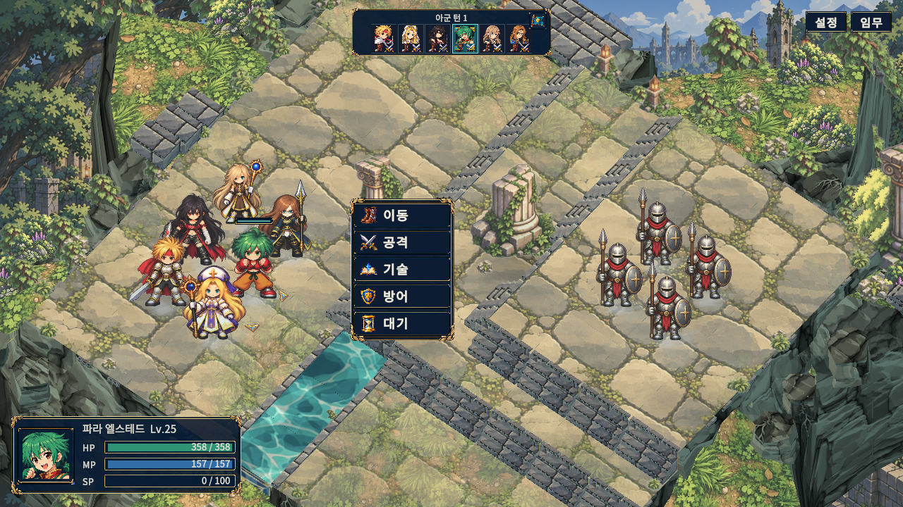
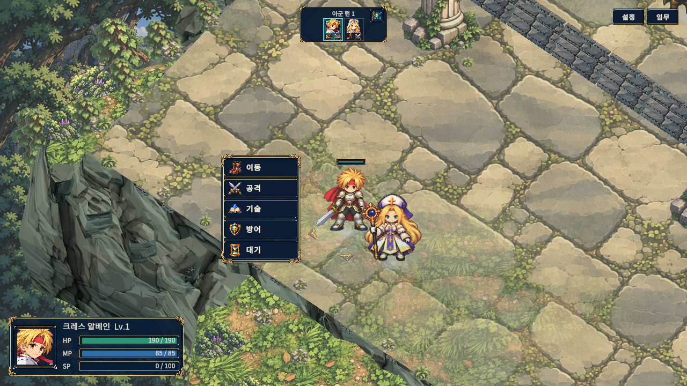
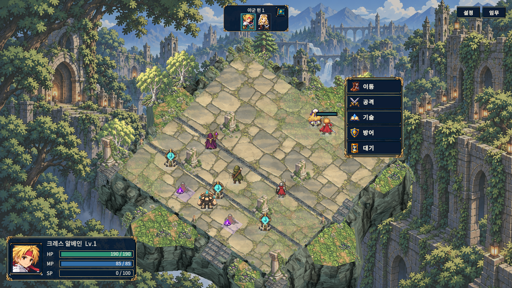
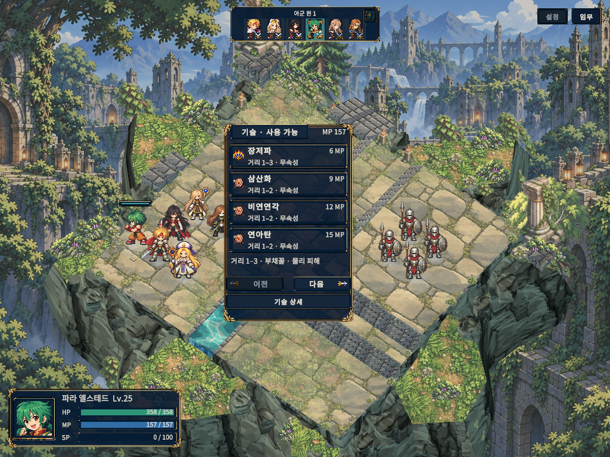

발은 바닥에, 몸은 그 위에
같은 6인 훈련·카메라·글자 크기에서 촬영한 실제 게임 화면입니다. 몸 형태를 따르는 짧은 그림자, 지형과 같은 광원, 낮춘 바닥 대비를 적용했습니다. 원화와 캐릭터 크기는 유지했습니다.
적용 후 · Windows 실행 화면

1280 × 720 · 훈련 6인 · 확대 / 글자 130%. 물결은 시간에 따라 움직이므로 두 캡처의 수면 모양은 다릅니다. AI 목업이 아닌 편집하지 않은 실행 캡처입니다.
발밑과 지형 경계 확인

인물 근접: 진한 발 접촉 음영과 옅은 몸 그림자를 함께 사용합니다.

카메라를 돌려도 광원은 월드 방향을 유지합니다.

작은 화면: 선택·위험 표시와 기술 UI의 가독성을 유지합니다.
몸 그림자는 같은 높이의 육지에만 투영하는 2.5D 표현입니다. 물·단차·맵 밖에서는 끊기며 벽이나 다른 유닛에 그림자를 드리우지는 않습니다. 구현·실제 검증·한계